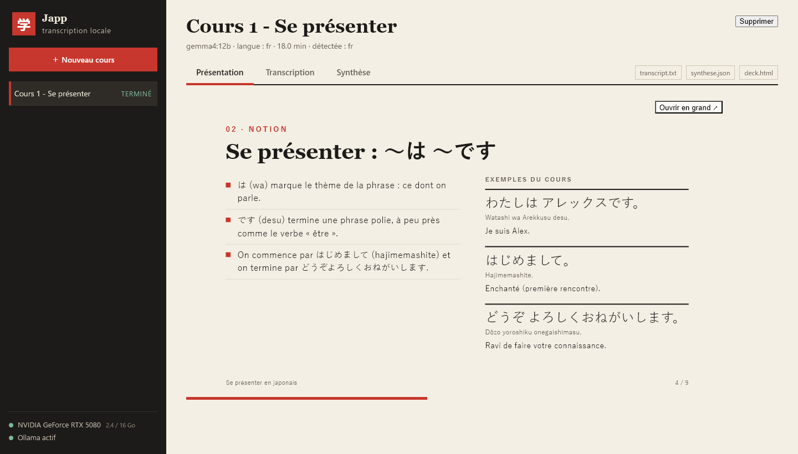
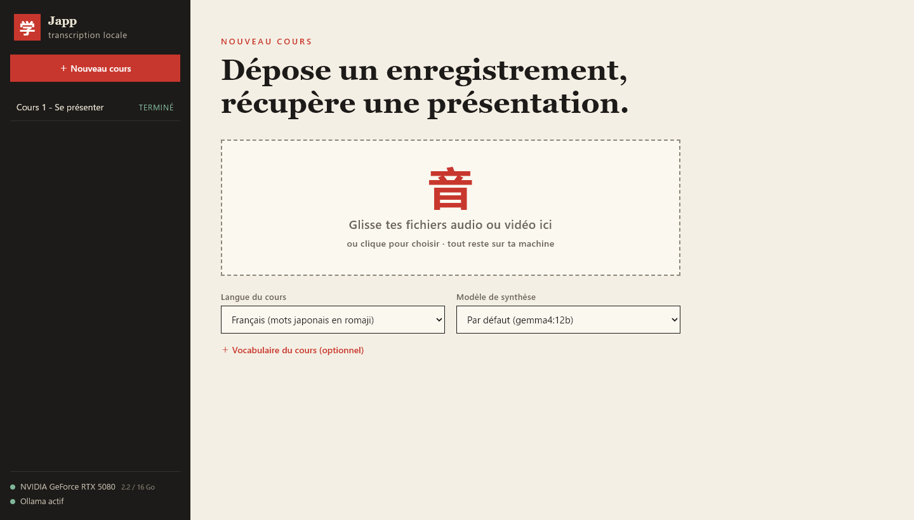
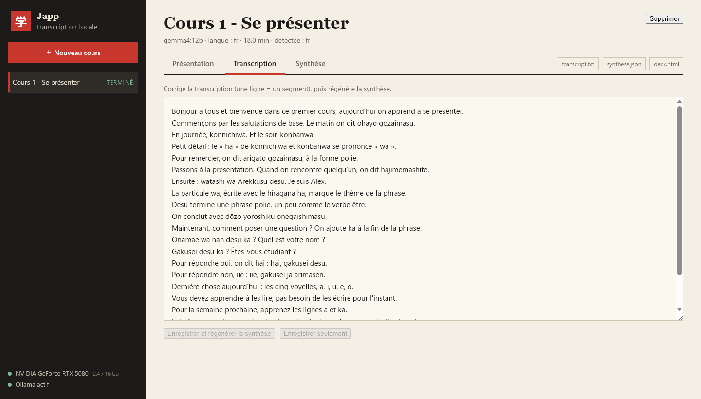
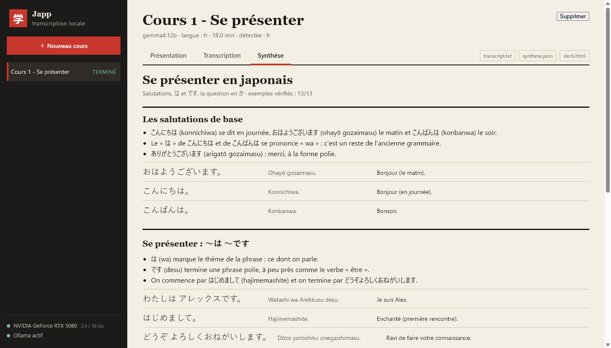

Tout reste chez toi
Pas de compte, pas de cloud, pas de télémétrie. Ton audio, tes notes et tes présentations restent sur ton disque. Internet ne sert qu'à télécharger les modèles, une seule fois.
Pour tes cours de japonais — et les autres
Dépose l'enregistrement. Japp écoute, rédige la transcription, en tire une synthèse et la transforme en présentation. Tout se passe sur ta carte graphique : rien ne quitte ton PC.
Gratuit et libreSans compteGPU NVIDIA requis

Fonctionnement
Trois étapes, un seul geste de ta part : glisser le fichier.
Audio ou vidéo, 15 minutes ou une heure : mp3 m4a wav mp4 mkv… Plusieurs fichiers à la fois : ils se mettent en file.
Whisper transcrit sur ta carte graphique, en japonais comme en français. Un modèle local (via Ollama) en tire notions, règles, exemples et devoirs. Environ 2 minutes pour 19 minutes de cours, sur une RTX 5080.
Une présentation prête à projeter, la transcription horodatée, les sous-titres et la synthèse. Tu corriges ce que tu veux, Japp régénère.
Aperçu
Exemple fictif généré par Japp à partir d'un cours imaginaire, jamais d'un vrai cours.



Pensé pour les cours
Pas de compte, pas de cloud, pas de télémétrie. Ton audio, tes notes et tes présentations restent sur ton disque. Internet ne sert qu'à télécharger les modèles, une seule fois.
Un cours en français avec des mots japonais ? Japp les écrit en romaji, lisible pour réviser. Un cours entièrement en japonais ? Choisis la langue, ou laisse-le deviner.
Un modèle de langage peut inventer des phrases. Japp ne garde un exemple que s'il figure vraiment dans la transcription, et affiche combien ont passé le contrôle.
La transcription est modifiable. Tu rectifies un nom propre, tu régénères la synthèse en un clic, sans retranscrire l'audio.
.txt, .srt, .md horodaté, .json et une présentation .html autonome : tu les ouvres, les partages ou les archives où tu veux.
Code ouvert sous licence MIT, installateur construit par GitHub Actions, somme SHA-256 et attestation de provenance fournies. La politique de sécurité détaille ce qui est protégé.
Prérequis
| Système | Windows 10 ou 11, 64 bits |
|---|---|
| Carte graphique | NVIDIA, série RTX recommandée. Pilote récent (570 ou plus pour les RTX 50). |
| Mémoire vidéo | 12 Go ou plus conseillés. Avec 8–10 Go, choisis le modèle plus léger gemma4:e4b. |
| Mémoire / disque | 16 Go de RAM conseillés · environ 20 Go libres |
| Ollama | Gratuit, pour la synthèse — ollama.com/download |
| Internet | Au premier lancement seulement. Ensuite, tout fonctionne hors ligne. |
Pas besoin d'installer Python, ffmpeg ni CUDA : Japp s'en charge.
Installation
C'est le moteur qui fait tourner le modèle de synthèse sur ta machine. Garde les options par défaut, tu n'as pas besoin de le lancer.
ollama.com/download ↗Récupère Japp-Setup dans la dernière version.
Télécharger pour WindowsInstallateur Windows · gratuitCompare la somme SHA-256 avec SHA256SUMS.txt de la release, et vérifie qu'il a bien été construit par GitHub Actions.
Get-FileHash .\Japp-Setup-*.exe -Algorithm SHA256
gh attestation verify .\Japp-Setup-*.exe --repo Alain-Soumagne/jappWindows SmartScreen peut afficher « Windows a protégé votre ordinateur » : l'installateur n'est pas signé numériquement (un certificat de signature est payant). Clique sur Informations complémentaires, puis Exécuter quand même.
Japp prépare son moteur (Python et bibliothèques de transcription, environ 3 Go). Compte 5 à 15 minutes selon ta connexion, et ne ferme pas la fenêtre. Les démarrages suivants prennent quelques secondes. À la première synthèse, le modèle (environ 8 Go) se télécharge tout seul.
Questions fréquentes
Non. La transcription et la synthèse s'exécutent sur ta machine. Japp ne se connecte à internet que pour télécharger Python, les bibliothèques et les modèles (GitHub, PyPI, Hugging Face, Ollama), puis fonctionne hors ligne.
Ollama fait tourner le modèle de langage qui rédige la synthèse. Sans lui, Japp transcrit quand même, mais ne résume pas. Japp le démarre et l'arrête tout seul.
Oui : l'installateur n'est pas signé numériquement, car un certificat coûte cher pour un projet libre. Vérifie la somme SHA-256 et l'attestation de provenance (voir plus haut), puis passe l'avertissement.
Oui, Whisper gère une centaine de langues. Japp est affiné pour les cours de japonais donnés en français (romaji, exemples en kana), mais la transcription et la synthèse restent utiles pour tout cours.
Pas pour l'instant : Japp est construit pour Windows et les cartes NVIDIA.
Choisis le modèle gemma4:e4b dans les options : il est plus léger, mais moins précis. Les enregistrements longs peuvent aussi demander plus de temps.
Le bouton « Supprimer » efface un cours. Pour tout retirer : désinstalle Japp, puis supprime le dossier %LOCALAPPDATA%\Japp. Les modèles (Whisper, Ollama) se suppriment séparément.
Sur GitHub. Pour un problème de sécurité, utilise le signalement privé décrit dans SECURITY.md.